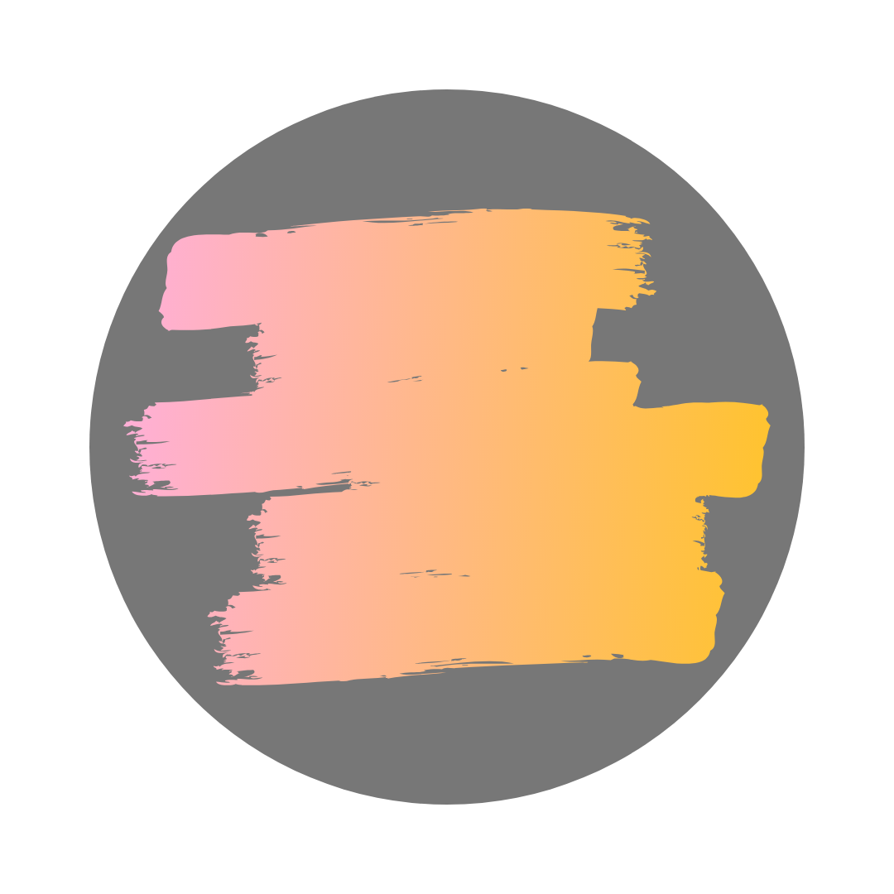

Introduction
My name is Stephon Fraser. I am the developer of this website. This site is a part of the CS50's Project 0 assignment. In this website, I've incorporated most of the knowledge I have obtained from the CS50W course and prior.
Website Development wasn't my first choice for a career. I initially wanted to become a Doctor, but I couldn't afford to go to medical school. However, later on in my life, I discovered a love for creating beautiful websites. After initially learning how to do that, I didn't want to stop. This was the beginning of my journey.
Some of the languages I've learned are:
- HTML - Hypertext Markup Language
- PHP - Hypertext Preprocessor
- CSS - Cascading Stylesheets
- JS - JavaScript
- C Language
About This Site
This site consists of 4 pages. I've made sure to use one standard format for all of the page to create a sense of unison between each pages, giving the entire website a light themed look.
Of course, the backbone of any website is HTML. With a touch of CSS (SCSS), I created a much more presentable look for our website.
The logo was created for my blog "The Circle" which covers content and stories from the different social circles around the world.
One of the reason I created 'The Circle' was to be able to share interesting stories that I've heard with people who may be interested in hearing them.
